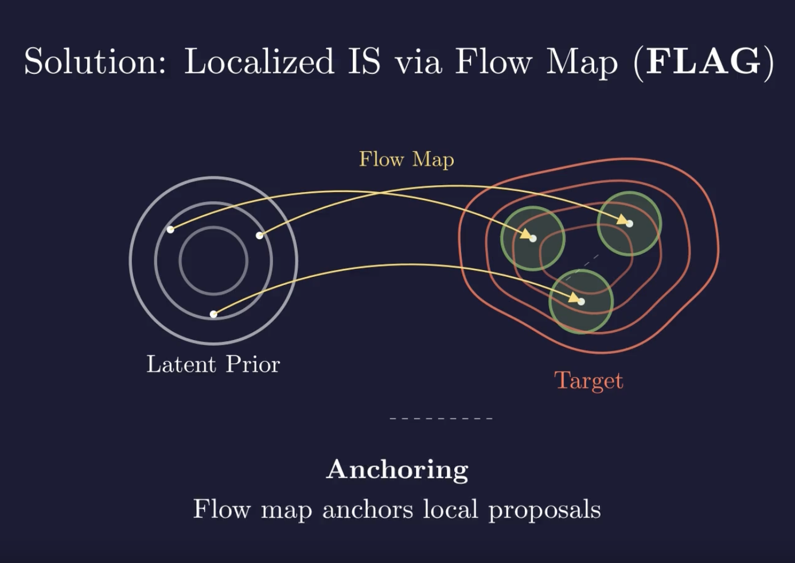
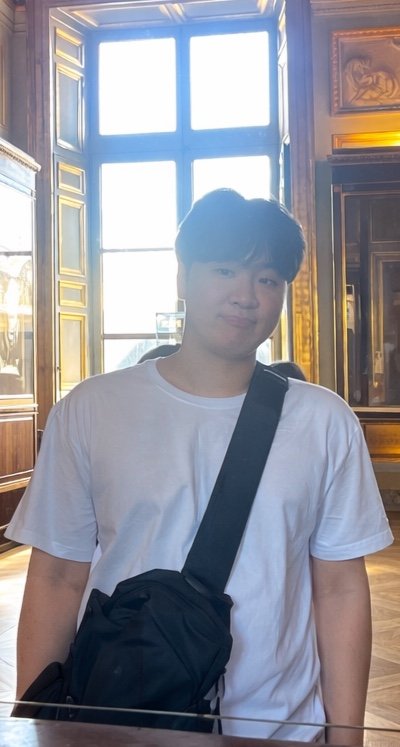
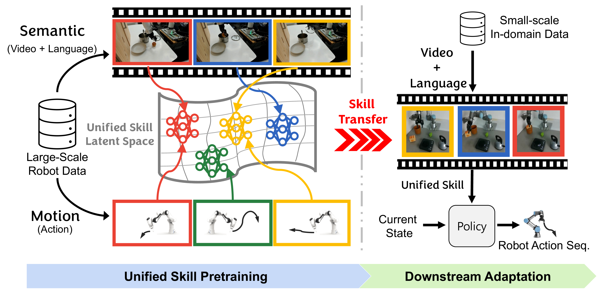
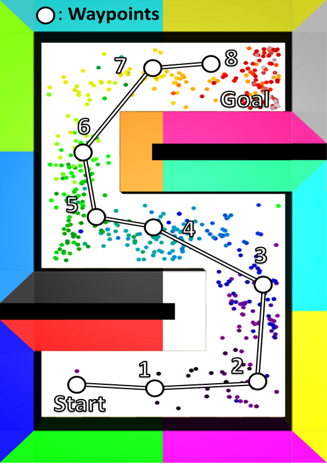

Jonghae Park
Ph.D. student at SNU · Reinforcement Learning, Robot Learning
Hi, I'm a Ph.D. student at Seoul National University, advised by H. Jin Kim.
My research explores how robots autonomously learn behavioral skills via reinforcement learning. My current interests include unsupervised reinforcement learning and leveraging temporal structure in RL. Outside of research, I enjoy reading, especially works by Milan Kundera and Albert Camus.
News
- I am currently a visiting PhD student at Princeton RL Lab, working with Prof. Benjamin Eysenbach!
Publications
* Equal contribution


EigenSafe: A Spectral Framework for Learning-Based Probabilistic Safety Assessment
RSS 2026CoRL Workshop 2025 (Oral)

Course Notes
-
CS285: Deep Reinforcement Learning
Spring 2023UC Berkeley · Handwritten Notes and Code
Education
-
Seoul National University
Mar. 2023 – PresentPh.D. in Aerospace Engineering
-
Seoul National University
Mar. 2016 – Feb. 2023B.S. in Mechanical Engineering
Academic Services
-
Conference Reviewer
2026NeurIPS
Honors & Awards
-
Next-Generation Scholar Fellowship in Basic Academic Fields
Mar. 2026 – Feb. 2027Seoul National University
-
Outstanding B.S. Thesis Presentation Award
Dec. 2022Department of Mechanical Engineering, Seoul National University
-
Presidential Award, Undergraduate Research Program
Feb. 2022Seoul National University
-
Encouragement Award, Social Contribution Plus Competition
Nov. 2020Seoul National University Social Responsibility
-
Grand Prize, Mechanical Product Design Competition
Jul. 2020Department of Mechanical Engineering, Seoul National University
Teaching
-
Motion Planning and Decision Making for Autonomous Systems
Spring 2026Teaching Assistant · Seoul National University · M3229.003300
-
Principles of Flight Vehicle Control
Spring 2026Teaching Assistant · Seoul National University · M2795.002600
-
Hyundai Motor Company AI Boosting Camp
Summer 2025Teaching Assistant · Seoul National University
-
Principles of Flight Vehicle Control
Spring 2023Teaching Assistant · Seoul National University · M2795.002600